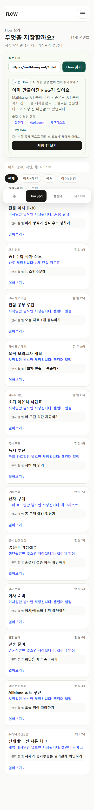
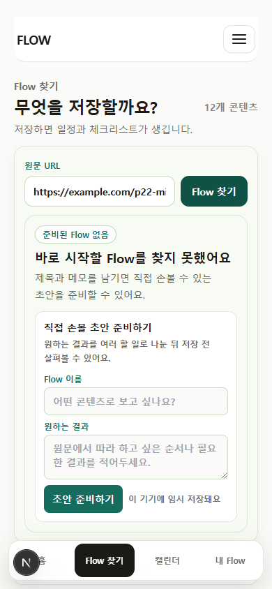
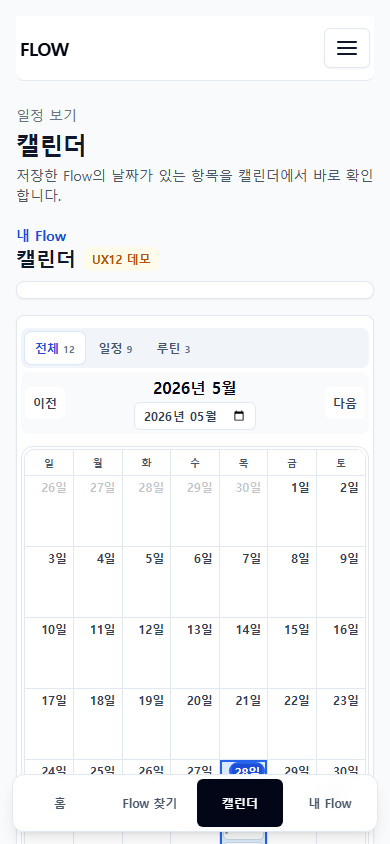
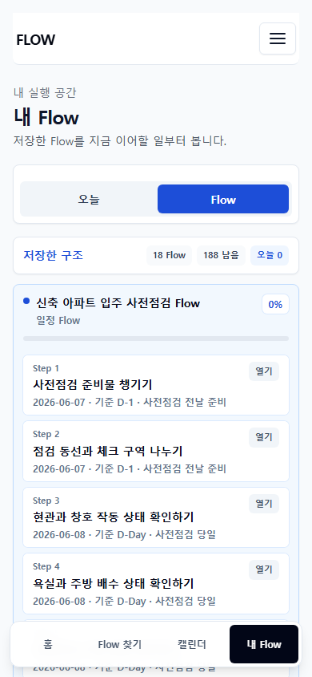

FLOWME SERVICE & PLATFORM STRATEGYCEO 보고용 · 2026-07-11
FlowMe는 URL·메모를 바로 쓸 수 있는 계획으로 바꾼다
URL이나 메모에서 날짜, 할 일, 체크 항목을 정리해 실행 계획(Flow)으로 만든다. 사용자는 이를 FlowMe 캘린더와 내 Flow에서 쓰거나, 파일로 내보내 기존 앱에서 이어서 쓸 수 있다. 지금은 플랫폼 완성 단계가 아니라 이 과정이 실제 저장과 재사용으로 이어지는지 확인하는 단계다.
좋은 정보를 찾은 뒤 다시 읽고, 할 일을 뽑고, 다른 앱에 옮겨 적는 시간을 줄인다.
캘린더, 할 일, 노트 앱을 대체하지 않는다. 사용자가 그 앱에 넣을 계획을 먼저 정리한다.
입력URL · 메모 · 공유 링크
→
FlowMe날짜 · 할 일 · 체크 항목 · 출처가 담긴 실행 계획
→
사용FlowMe 캘린더 · 내 Flow · 파일 내보내기
사용자 문제찾은 내용을 다시 정리하는 반복 작업
문제는 정보 부족이 아니라, 찾은 내용을 다시 정리하고 옮겨 적는 일이다
웹 글이나 영상에서 유용한 정보를 찾아도 바로 실행되지는 않는다. 사용자는 중요한 내용을 골라 날짜와 할 일로 바꾸고, 쓰는 앱마다 다시 입력해야 한다.
1
자료가 흩어져 있다웹 글, 영상, 공식 안내, 개인 메모가 서로 다른 곳에 남는다.
2
실행 계획으로 다시 정리해야 한다사용자가 순서, 날짜, 준비물, 체크 항목을 직접 추린다.
3
실행 도구로 옮겨야 한다Calendar, Todo, 노트, 시트에 같은 내용을 다시 적는다.
4
출처와 수정본이 분리된다나중에는 왜 이 일을 넣었는지, 정보가 최신인지 알기 어렵다.
브라우저 탭메모체크리스트캘린더
→
입력URL 또는 메모 한 번
정리실행 순서와 날짜를 확인
실행내 Flow 또는 기존 도구에서 이어가기
회고체크와 메모를 다음 수정에 반영
이 문제 정의는 현재 제품 가설이다. 실제 사용자 전환·재방문 수치로 검증된 결론은 아니다.
현재 제품 화면구현 여부를 확인한 화면 / 사용자 검증 결과 아님
현재 제품에는 URL 입력부터 저장·실행까지 필요한 네 개의 화면이 있다
URL로 기존 Flow를 찾거나 직접 초안을 만들고, 캘린더와 내 Flow에서 이어서 쓸 수 있다. 다만 한 사용자가 이 네 단계를 반복해서 사용하는지는 아직 검증하지 않았다.
현재 구현

1. 기존 Flow 찾기같은 URL로 만든 Flow가 있으면 다시 생성하지 않고 먼저 보여준다.
현재 구현

2. 없으면 직접 초안사용자가 제목과 원하는 결과를 적고 저장 전 내용을 확인한다.
현재 구현

3. 날짜로 실행저장한 Flow의 날짜 있는 항목을 Calendar에서 다시 찾는다.
현재 구현

4. 내 Flow에서 이어가기Flow 구조, 다음 실행 항목, 진행 상태를 개인 실행 기록으로 남긴다.
화면 근거: 2026-07-02~2026-07-11 브라우저 자동 확인 화면. 현재 저장소의 내부 품질 확인 결과이며 실제 사용자 행동 증거는 아니다.
경쟁 제품 화면 비교공식 제품 페이지 캡처
기존의 할 일·문서·일정·자동화 앱을 대체하지 않는다
이 제품들은 할 일 관리, 문서 작성, 일정 배치, 앱 연동을 이미 전문적으로 해결한다. FlowMe는 같은 기능을 복제하지 않고, 원문을 각 도구에서 쓸 계획으로 바꾸는 단계에 집중한다.